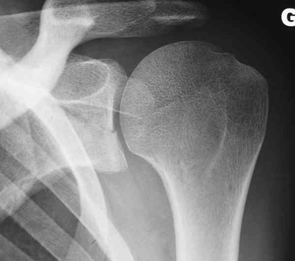
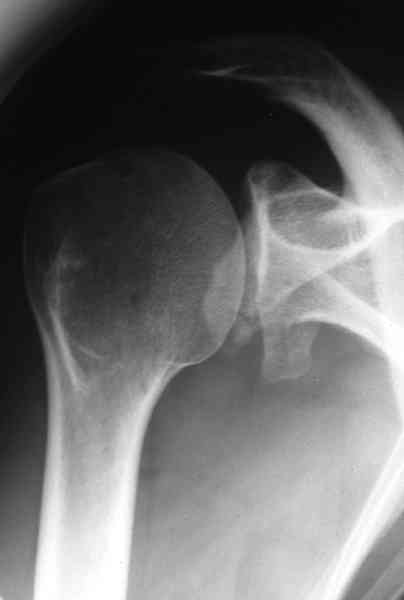
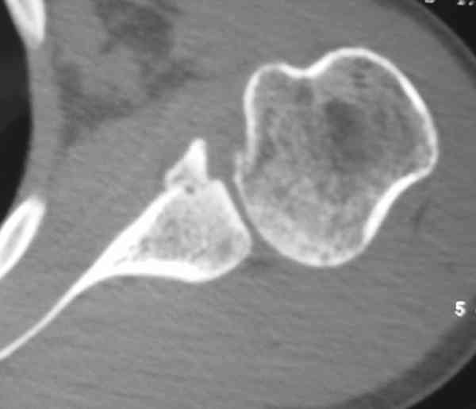
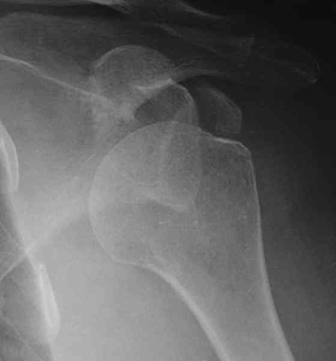
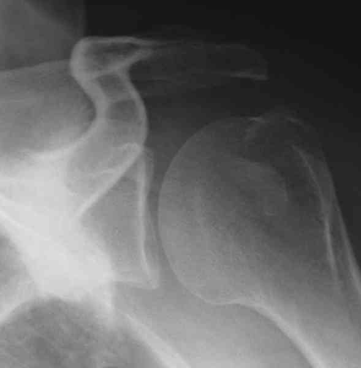
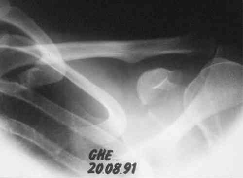

Bienvenue Sur Medical Education
Fractures : scapula
Spécialité : traumatologie /
Points importants
-
Ce sont des fractures relativement rares car l'omoplate est entourée de muscles qui la protègent
Présentation clinique / CIMU
SIGNES FONCTIONNELS
-
Douleur thoracique postérieure latéralisée, à la mobilité de l'épaule
CONTEXTE
-
Choc violent direct ou indirect
EXAMEN CLINIQUE
-
L'examen clinique oriente vers le diagnostic de fracture de l'omoplate (scapula) :
-
douleur
-
impotence fonctionnelle
-
épaule pseudo-athlétique
-
ecchymoses
-
dermabrasions
-
Il faut rechercher les lésions associées éventuelles : vasculaires, nerveuses (plexus brachial), thoraciques...
Signes paracliniques
IMAGERIE
Présentation clinique / CIMU
SIGNES FONCTIONNELS
- Douleur thoracique postérieure latéralisée, à la mobilité de l'épaule
CONTEXTE
- Choc violent direct ou indirect
EXAMEN CLINIQUE
-
L'examen clinique oriente vers le diagnostic de fracture de l'omoplate (scapula) :
- douleur
- impotence fonctionnelle
- épaule pseudo-athlétique
- ecchymoses
- dermabrasions
- Il faut rechercher les lésions associées éventuelles : vasculaires, nerveuses (plexus brachial), thoraciques...
Signes paracliniques
IMAGERIE
Radiographie
- Permet en général de faire le diagnostic : incidence de face, profil de Lamy chaque fois que possible, grill costal, radio pulmonaire
Scanner
- En cas de fracture articulaire paraissant déplacée un scanner avec reconstruction, bi ou tridimensionnelle permettra d'orienter la décision thérapeutique
Diagnostic étiologique
-
On distingue les fractures extra-articulaires, les fractures articulaires (incluant les fractures de la voûte acromio-coracoïdienne) et les autres, comprenant les fractures d'apophyse, les avulsions osseuses et les grandes impactions de la scapula
Fractures extra-articulaires : les plus fréquentes (50%)
- Fractures du corps de l'omoplate
- Fractures de l'épine de l'omoplate
- Fractures de la pointe
Fractures articulaires
 _807 Photo Fracture transversale de la glène de l'omoplate
 _808 Photo Fracture du rebord antérieur et inférieur de la glène de l'omoplate
 _809 Photo Fracture du rebord antéro-inférieur de la glène de l'omoplate
- Fractures de la glène (10%)
- Fractures du col anatomique et du col chirurgical (25%)
- Fractures de la voûte acromio-coracoïdienne (acromion : 8%, coracoïde : 7%)
Autres fractures de l'omoplate
- Grandes fractures complexes avec impaction du moignon de l'épaule (syndrome omo-cléïdo-thoracique)
- Fractures avulsions de certaines insertions tendineuses
Fractures du processus coracoïde
- La fracture du bec de la coracoïde est souvent associée à une luxation antéro-interne de l'épaule
 _810 Photo Luxation antéro-interne de l'épaule avec fracture de la coracoïde
 _811 Luxation antéro-interne de l'épaule avec fracture de la coracoïde après réduction
- La fracture du pied de la coracoïde est par contre souvent associée à une disjonction acromio-claviculaire
 _812 Fracture du pied de la coracoïde associée à une disjonction acromio-claviculaire
Traitement
Fractures extra-articulaires
- Sont habituellement traitées de manière fonctionnelle
- Echarpe, gestion de la douleur, rééducation immédiate
- En général, le bilan fonctionnel est très satisfaisant au bout de 2 mois
Fractures articulaires
- Lorsqu'elles sont déplacées, elles nécessitent un traitement chirurgical
- Quand elles ne sont pas déplacées, elles sont traitées de manière fonctionnelle
Fractures déstabilisant la voûte acromio-coracoïdiennne
- Ces fractures (de type fracture complète de l'acromion +/- disjonction acromio-claviculaire) méritent la plus grande attention car toute consolidation vicieuse peut retentir sur la fonction de l'épaule (avis orthopédique +++)
Fractures du processus coracoïde
- Les fractures du bec ne nécessitent qu'une simple surveillance (traitement de la luxation +++)
- Les fractures du pied sont traitées en stabilisant la disjonction acromio-claviculaire (Cf. Disjonctions acromio-claviculaires)
Devenir / orientation
CRITERES D'ADMISSION
-
Cf. Traitement
CRITERES DE SORTIE
-
Cf. Traitement
ORDONNANCE DE SORTIE
-
Antalgiques
-
± AINS
Bibliographie
-
Traumatologie à l'usage de l'urgentiste. Sous la direction de Dominique Saragaglia. Editions Sauramps Médical. 2004
Bibliographie
- Traumatologie à l'usage de l'urgentiste. Sous la direction de Dominique Saragaglia. Editions Sauramps Médical. 2004
Auteur(s) : Jean-Jacques BANIHACHEMI, Dominique SARAGAGLIA